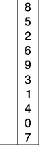

Es un algoritmo de ordenamiento que requiere O operaciones para ordenar una lista de n elementos.
Su funcionamiento es el siguiente:
• Buscar el mínimo elemento de la lista
• Intercambiarlo con el primero
• Buscar el mínimo en el resto de la lista
• Intercambiarlo con el segundo
Y en general:
• Buscar el mínimo elemento entre una posición i y el final de la lista
• Intercambiar el mínimo con el elemento de la posición i
De esta manera se puede escribir el siguiente pseudocódigo para ordenar una lista de n elementos indexados desde el 1:
para i=1 hasta n-1
minimo = i;
para j=i+1 hasta n
si lista[j] < lista[minimo] entonces
minimo = j /* (!) */
fin si
fin para
intercambiar(lista[i], lista[minimo])
fin para

Ibarra, A. (2019). Selectionsort. [imagen] Recuperado de: https://andresibarra.files.wordpress.com/2013/04/selectionsort2.gif?w=80&h=300 [Accedido 2 Abr. 2019].